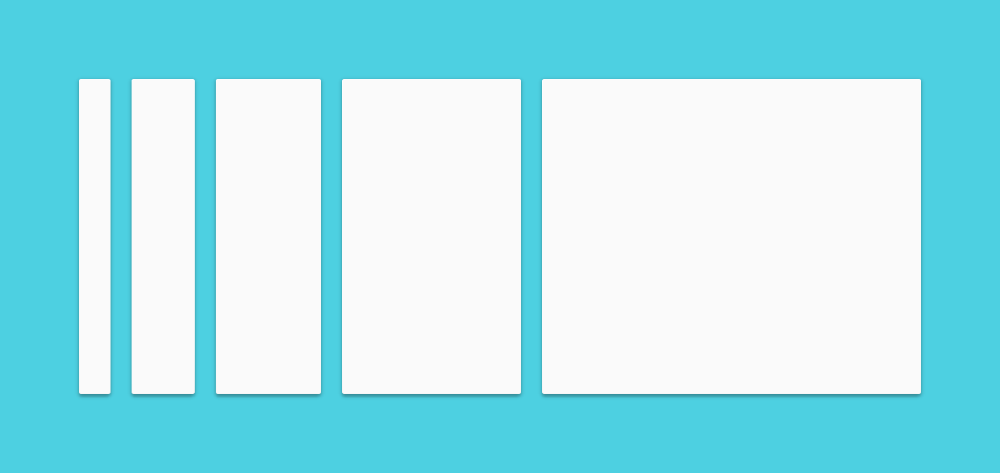

혁신 그리고 기술과 과학의 가능성을 통해 좋은 디자인의 고전적 원리들을 합성한 시각적인 언어를 생성하라.

플랫폼과 디바이스 크기 전체에 걸친 단일화된 경험을 감안한 단일의 근본적 체계를 구축하라. 모바일 수칙들이 핵심적이지만, 터치와 음성과 마우스와 키보드도 모두 최상위의 입력 방법들입니다.


우리는 혁신 그리고 기술과 과학의 가능성을 통해 좋은 디자인의 고전적 원리들을 합성한 우리의 사용자들을 위한 시각적인 언어를 생성하기 위해서 우리 스스로 도전했습니다. 그 결과가 바로 이 머티리얼 디자인(Material Design)입니다. 이 명세는 우리가 머티리얼 디자인의 원리와 세부 사항 개발을 지속함으로서 업데이트되는 살아 있는 문서입니다.
혁신 그리고 기술과 과학의 가능성을 통해 좋은 디자인의 고전적 원리들을 합성한 시각적인 언어를 생성하라.
플랫폼과 디바이스 크기 전체에 걸친 단일화된 경험을 감안한 단일의 근본적 체계를 구축하라. 모바일 수칙들이 핵심적이지만, 터치와 음성과 마우스와 키보드도 모두 최상위의 입력 방법들입니다.

머티리얼 메타포는 합리적인 공간과 모션의 체계를 통합하는 이론입니다. 머티리얼은 촉각을 이용한 현실에 근거를 두었고, 종이와 잉크에 대한 연구에 의해서 영감을 받았습니다. 거기에 또 기술적인 진보에 근거를 두었으며, 상상과 마법에 열려있습니다.
머티리얼의 표면과 가장자리는 현실에 기반한 시각적인 신호를 제공합니다. 익숙한 촉각을 이용한 속성들의 사용은 유저들이 행동 유도(Affordance)를 이해하는 것을 도와줍니다. 그렇지만 머티리얼의 융통성은 물질들의 법칙을 깨지 않으면서 물질 세계의 그것들을 대체하는 새로운 행동 유도를 만들어 냅니다.
빛과 표면과 움직임의 기본 원칙은 어떻게 개체들이 공간과 관계 안에서 서로 움직이고, 교류하며, 존재하는지를 전달하기 위한 열쇠입니다. 사실적인 조명은 층(Seam)을 보여주며, 공간을 분할하고, 이동 부분을 보여줍니다.

인쇄 기반 디자인의 기초적인 요소들(타이포그래피, 격자, 공간, 비율, 색, 이미지의 사용)은 시각적인 처리들을 돕습니다. 이 요소들은 시각적인 만족과는 거리가 있습니다. 그것들은 계층과 의미와 집중을 만들어 냅니다. 의도적인 색 선택과 가장자리를 잇는 이미지와 큰 비율의 타이포그래피와 의도적인 흰색 공간은 사용자가 경험에 몰두하도록 만드는 선명하고 그래픽적인 인터페이스를 만들어 냅니다.
사용자 액션의 주안점은 핵심 기능을 즉각적으로 분명하게 알 수 있도록 만들고, 사용자를 위한 중간 경로(Waypoint)를 제공합니다.

모션은 견인차로서 사용자를 존중하고 강화합니다. 주된 사용자 액션은 전체적인 디자인을 변형시키는 모션을 시작하게 하는 변곡점입니다.
모든 액션은 단일 환경에서 일어납니다. 개체는 변형하고 재조직하는 그 순간에 경험의 연속성을 깨는 일이 없이 사용자에게 보여지게 됩니다.
모션은 주의를 집중하고 연속성을 유지하도록 제공함으로서 의미 있고 적절합니다. 피드백은 미묘하며 또한 분명합니다. 전환은 효율적이며 또한 일관적입니다.